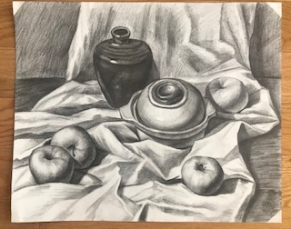
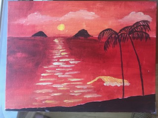
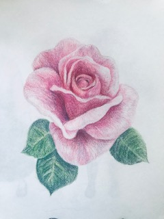
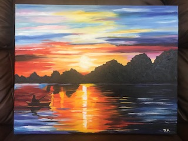
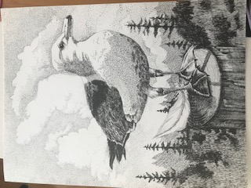
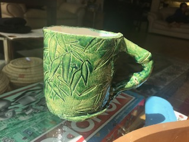

Visual arts has many forms. Below are some forms of art that I have some experience in.
| Medium | Example | Description |
| Graphite |  | Black-and-white sketches are created by drawing something and using strokes with a graphite pencil to shade the drawing in. |
| Acrylic |  | This type of paint is used by directly applying the paint to paper or canvas with a brush. |
| Color Pencil |  | Drawings colored with color pencil can be drawn with color pencil, graphite pencil, or other mediums; for example, they can be outlined with pens. |
| Oil Paint |  | Oil paint is oil-based, hence the name. I've used it to paint canvas before. |
| Ink |  | Black-and-white ink sketches can be done over a rough sketch in pencil or freehand. I find the former to be easier. |
| Ceramics |  | Clay can be molded into preferred shapes with just human hands or with other techniques: clay can be cut into coils and slabs, as well as attached to other pieces with score-and-slip. |